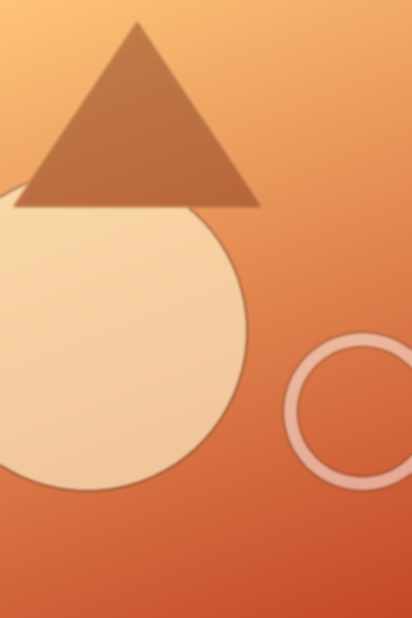
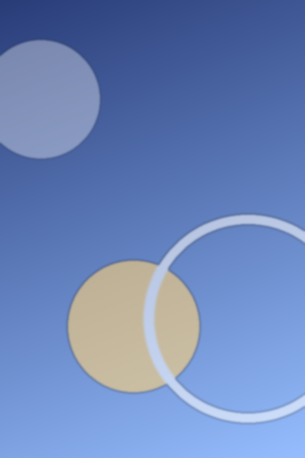
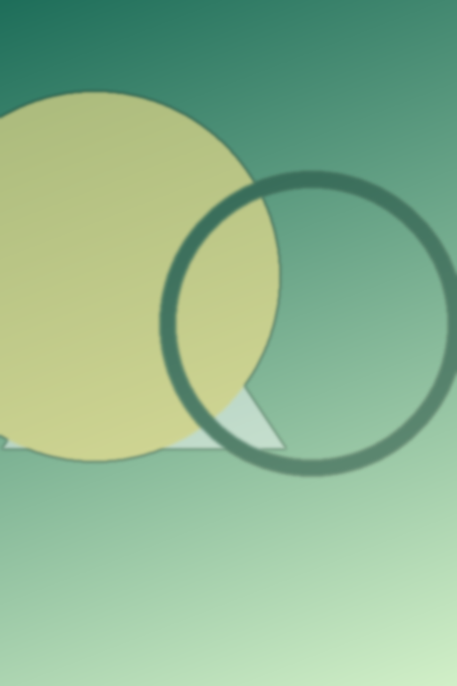
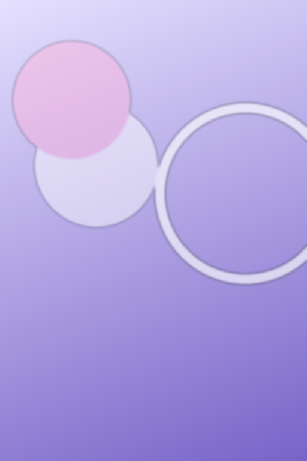
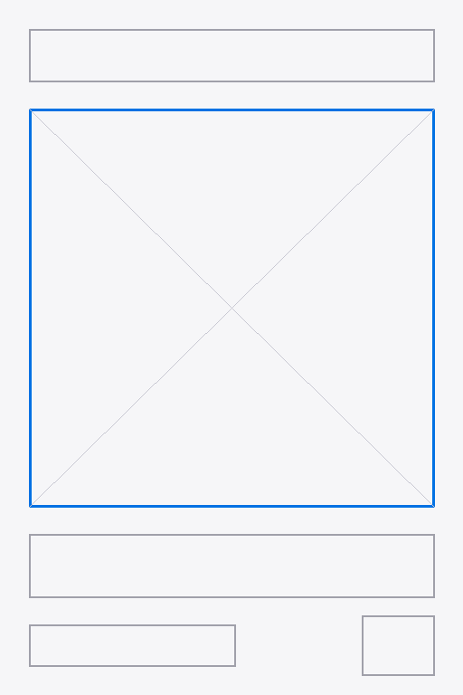
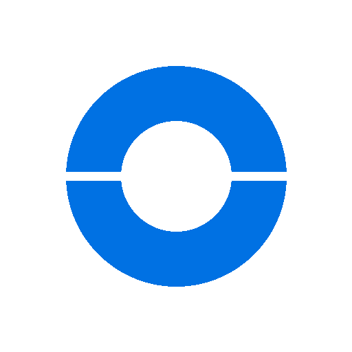
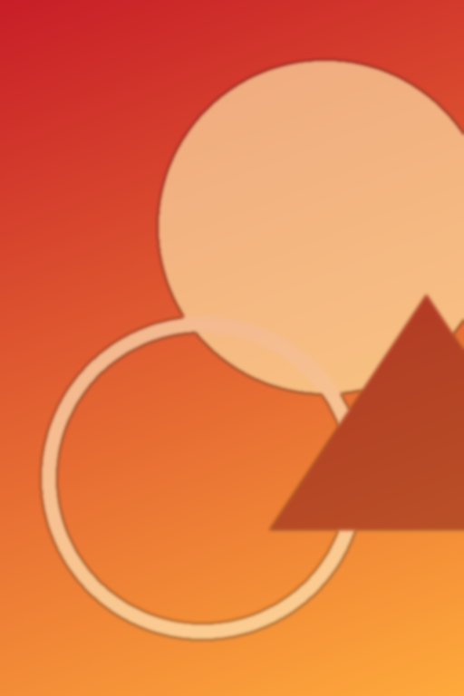
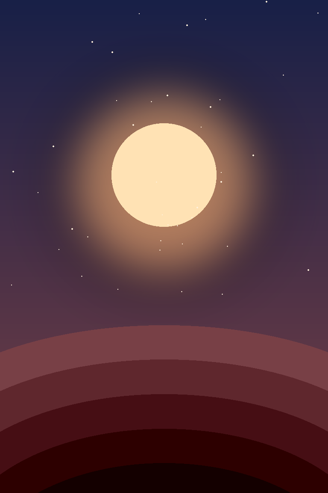
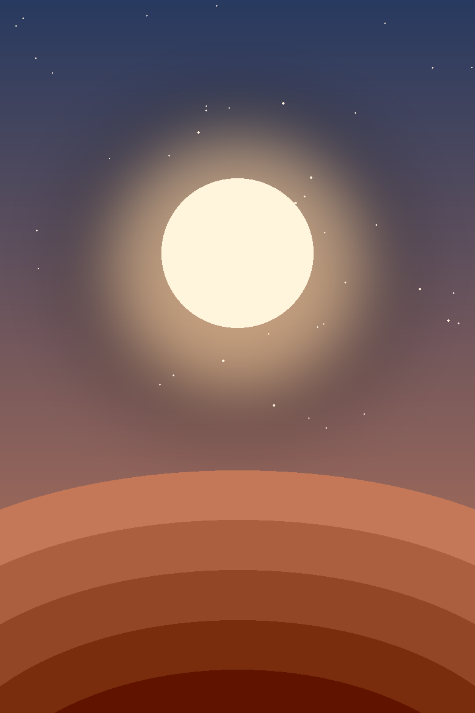

设计资产
在工作台内部建立组件库、文件夹和可视化资产；所有整理操作都不会移动 Finder 原件。
全部资产
9 项 · 图片与 PDF 可预览，点击“编辑”可以整理或移动
放入组件库
保存在这台 Mac，不上传云端。

秋季 KV · 方向 A 暖阳编辑AI 发散草图：落日暖色与圆形光晕，隐喻“收获”。
预览

秋季 KV · 方向 A 暖阳编辑
AI 发散草图：落日暖色与圆形光晕，隐喻“收获”。

秋季 KV · 方向 B 夜空编辑AI 发散草图：深蓝夜空与光环，隐喻“远望”。
预览

秋季 KV · 方向 B 夜空编辑
AI 发散草图：深蓝夜空与光环，隐喻“远望”。

秋季 KV · 方向 C 森林编辑AI 发散草图：绿色几何与暖光，隐喻“生长”。
预览

秋季 KV · 方向 C 森林编辑
AI 发散草图：绿色几何与暖光，隐喻“生长”。

风格参考 · 柔光渐变编辑无字风格图，可作为生图风格输入。
预览

风格参考 · 柔光渐变编辑
无字风格图，可作为生图风格输入。

竖版海报固定模板编辑日期、主视觉、标题、签名四个固定区域。
预览

竖版海报固定模板编辑
日期、主视觉、标题、签名四个固定区域。

示例品牌 Logo编辑演示用虚构 Logo；真实工作中只使用官方权威版本。
预览

示例品牌 Logo编辑
演示用虚构 Logo；真实工作中只使用官方权威版本。

节日海报 · 历史成品编辑仅供人工回看版式层级，不作为生图输入。
预览

节日海报 · 历史成品编辑
仅供人工回看版式层级，不作为生图输入。

冬至主视觉 · 第 1 轮 A编辑设计工作室第 1 轮产出（演示样例）：夜空、暖月与远山，无文字。
预览

冬至主视觉 · 第 1 轮 A编辑
设计工作室第 1 轮产出（演示样例）：夜空、暖月与远山，无文字。

冬至主视觉 · 第 1 轮 B编辑设计工作室第 1 轮产出（演示样例）：黄昏暖光版本，无文字。
预览

冬至主视觉 · 第 1 轮 B编辑
设计工作室第 1 轮产出（演示样例）：黄昏暖光版本，无文字。
添加外部路径索引
只建立 Finder 索引
适合大型项目目录。工作台只记录路径，不复制、不移动，也不删除原文件。